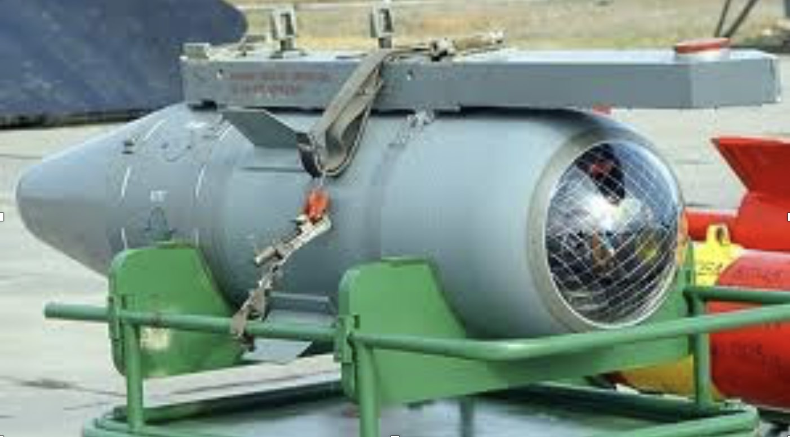

Sensors can improve the world through diagnostics in medical applications; improved performance of energy sources like fuel cells and batteries and solar power; improved health and safety and security for people; sensors for exploring space and the known university; and improved environmental monitoring.
NANOTECHNOLOGY
Nanotechnology is the term given to those areas of science and engineering where phenomena that take place at dimensions in the nanometre scale are utilised in the design, characterisation, production and application of materials, structures, devices and systems. Although in the natural world there are many examples of structures that exist with nanometre dimensions (hereafter referred to as the nanoscale), including essential molecules within the human body.
ELECTROMAGNETIC BOMB

An electromagnetic bomb, or e-bomb, is a weapon designed to take advantage of this dependency. But instead of simply cutting off power in an area, an e-bomb would actually destroy most machines that use electricity. Generators would be useless, cars wouldn't run, and there would be no chance of making a phone call. In a matter of seconds, a big enough e-bomb could thrust an entire city back 200 years or cripple a military unit.